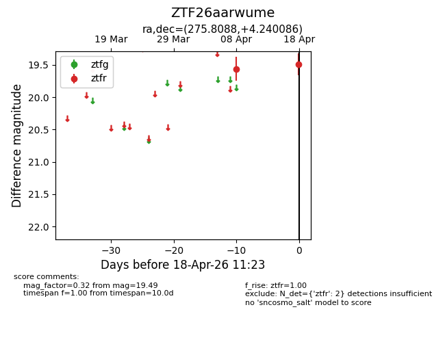
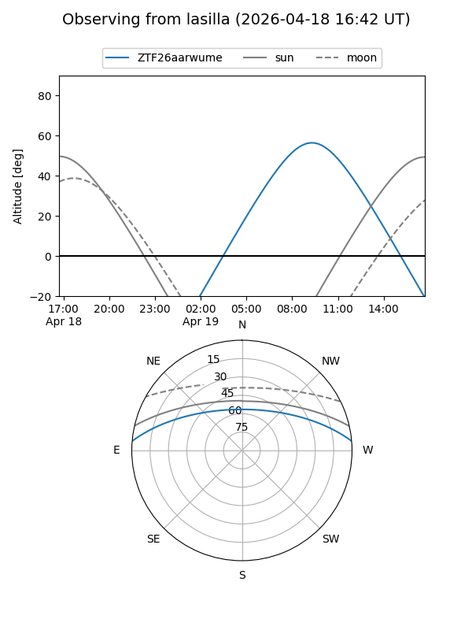
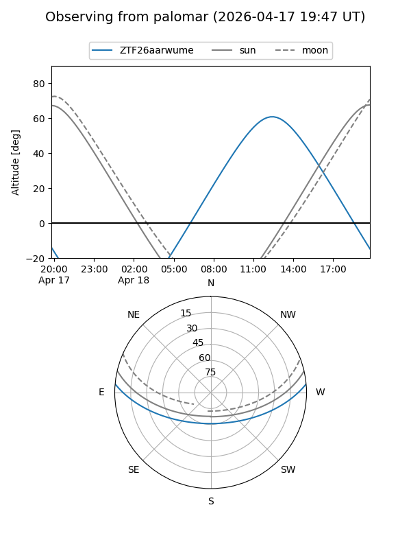

ZTF26aarwume
Target ZTF26aarwume at 2026-04-18 11:27
Aliases and brokers:
FINK: link
Lasair: link
ALeRCE: link
alt names
ZTF26aarwume (ztf,fink_ztf)
Coordinates:
equatorial (ra, dec) = 275.8088,+4.24009
equatorial (HMS+DMS) = 18:23:14.12,+04:14:24.31
galactic (l, b) = (33.5099,+8.20167)
Flags:
Photometry:
last ztfr=19.49
2 ztfr detections
Lightcurve

Visibility


Additional plots